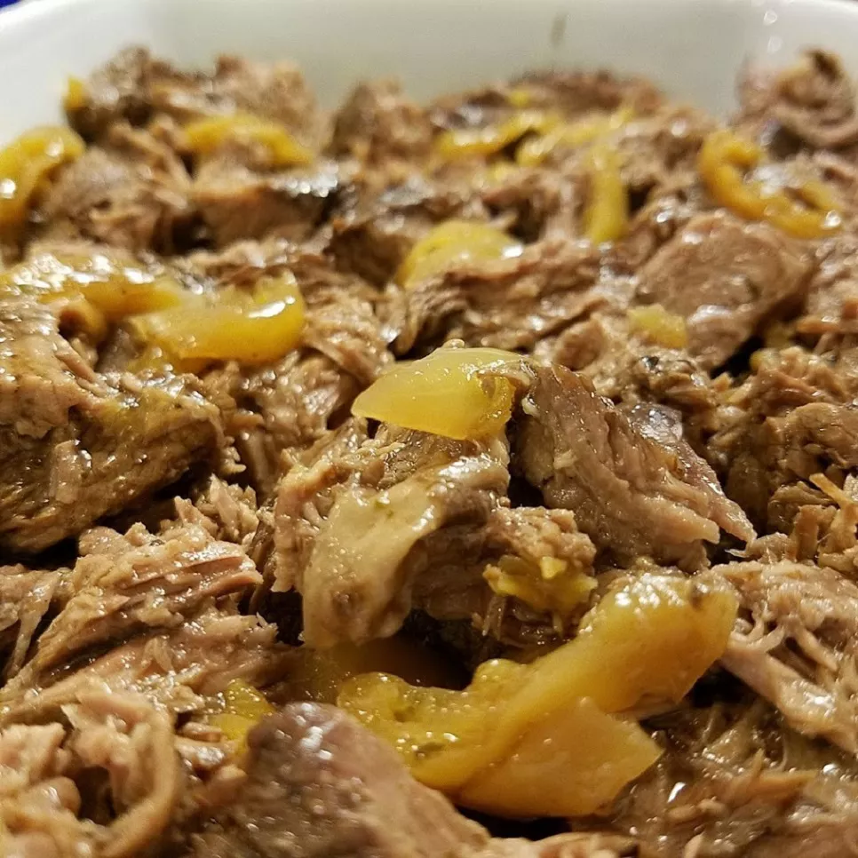

Mississippi Pot Roast

Description
Mississippi Pot Roast is the perfect dish to make in the slow cooker with a chuck roast, gravy, and pepperoncini peppers. The tender, tangy shredded beef is delicious with mashed potatoes or piled into hoagie rolls.
Ingredients
- 3 pound chuck roast
- 1/2 12oz jar of pepperoncini
- 1/2 12oz jar of pepperoncini juice
- 1/2 cup unsalted butter
- 1oz packet of au jus gravy mix
- 0.4oz packet of buttermilk ranch mix
- salt and pepper to taste
Cooking Steps
- Combine chuck roast, pepperoncini, pepperoncini juice, butter, au jus mix, ranch dressing mix, salt, and pepper in a slow cooker. Cover and cook on Low until roast is fork-tender, about 8 hours.
- Remove chuck from slow cooker; shred with 2 forks and serve with gravy.